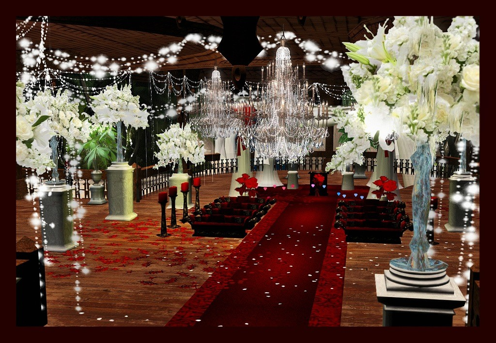

WEDDING

Bronze Wedding
- A great package for those who just need help getting started, or at any other point where a little
assistance is needed!
- Up to three hours of consultation regarding your planning
- Referral to reputable vendors and advice regarding contracts
- Unlimited basic email and telephone questions
- Full payment required at signing of contract
Silver Wedding
- Perfect for those wanting professional assistance ONLY on the day of their wedding!
- Review of all vendor contracts and confirmation of vendor services 1 – 2 weeks prior to the
wedding day
- Assistance in development of a wedding day itinerary
- Consultant’s services on the wedding day for a maximum of ten hours
- Provision of complete wedding emergency kit
- Personal management of the wedding day itinerary, vendors and the wedding party
$300.00 deposit at signing of contract with balance due one week prior to the set wedding
day
Gold Wedding
- Need full assistance with your plans, but not wedding day directing services
- FREE wedding planning binder with tip sheets, questions for vendors, worksheets and
timeline guides, including pockets for your contracts, pictures, and other important
information!
- Up to ten hours of consultation regarding your planning
- Referral to reputable vendors, review of vendor contracts and confirmation of vendors 1 – 2
weeks prior to wedding day
- Assistance in developing your wedding day itinerary
- FREE Wedding Style Consultation
- One visit to your ceremony and reception venue prior to the wedding